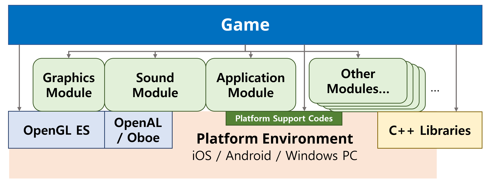

Concept and Architecture¶
A Bird’s-eye View¶
Overall Architecture¶
{kind=link}
Leggiero 엔진은 각 플랫폼 코드를 추상화합니다. 엔진의 모듈은 플랫폼 기능 및 그래픽스, 사운드 API, 각종 C++ 호환 라이브러리들의 기능들을 추상화하여 게임에 사용하기 편리한 형태로 제공합니다.
Leggiero 엔진 및 엔진을 이용한 게임의 기반 코드는 C++로 작성되어, 각종 오픈소스 라이브러리를 이용할 수 있으며, 엔진 수준에서도 편의성을 제공하는 여러 라이브러리를 임베드하여 제공합니다. 일부 모듈은 이런 라이브러리들의 기능을 더욱 더 사용하기 편리하게 래핑하여 제공하기도 합니다.
OpenGL ES API는 게임에서도 직접 접근할 수 있도록 제공합니다. 엔진의 Graphics 모듈은 OpenGL ES 시스템의 초기화나 수명주기에 의한 관리, 그리고 추가적인 유틸리티 기능을 제공하며, 게임의 랜더링은 게임 코드에서 직접 처리할 수 있습니다.
Leggiero가 '엔진'인지의 여부에 대해서는 이견이 있을 수 있습니다. 게임의 로직이나 랜더링 구조를 제공하지 않아, 사실은 '프레임워크'에 더 가깝다고 할 수도 있기 때문입니다. 게임 <Protocol:hyperspace Diver>를 위해 만들어진 Leggiero는, 게임 개발 과정에 있어 '게임 코드'와 대비되는 '엔진 코드'로써 이용되었기에 '엔진'이라는 이름으로 칭하고 있습니다만, 원하는 대로 이해하고 칭하셔도 상관없습니다.
Common Parts¶
Basic , Engine , Utility 프로젝트는 엔진의 가장 기본적인, 의존성이 적은 부분들을 제공합니다. Basic 라이브러리는 전역 타입 및 컴파일 설정 등을 제공하고, Utility 라이브러리는 언어 수준과 가까운 기본적인 도구들을 포함하고 있습니다.
Engine 라이브러리는 전체 게임의 뼈대가 되는 공통적인 구조의 골자를 정의합니다. 이후 설명할 모듈화 된 게임 구조의 기본 타입들과, 일반적으로 많은 게임에서 사용되는 Scene 기반 구조의 틀을 Toolbox 로 제공합니다.
Moduled Engine¶
Leggiero는 모듈화된 기능을 제공하는 게임 엔진을 지향했습니다. 아래의 CreateGame.cpp 에 있는 게임 코드와 같이, 각 모듈들이 제공하는 기능을 '조립'하여 게임 객체를 만들어내고, 기동시키게 됩니다:
//------------------------------------------------------------------------------
void Game::_InitializeUsingModules(Leggiero::IPlatformApplication *application)
{
_InitializeModule(Leggiero::EngineModuleIdType::kLog, application);
_InitializeModule(Leggiero::EngineModuleIdType::kCrypto, application);
_InitializeModule(Leggiero::EngineModuleIdType::kHTTP, application);
_InitializeModule(Leggiero::EngineModuleIdType::kGraphics, application);
_InitializeModule(Leggiero::EngineModuleIdType::kFont, application);
}
//------------------------------------------------------------------------------
void Game::_RegisterUsingComponents()
{
_RegisterEngineComponent(new Leggiero::Graphics::GraphicResourceManagerComponent());
_RegisterEngineComponent(new Leggiero::Input::TouchInputComponent());
_RegisterEngineComponent(Leggiero::FileSystem::FileSystemPathComponent::CreateComponentObject());
_RegisterEngineComponent(Leggiero::FileSystem::BundleFileResourceComponent::CreateComponentObject());
_RegisterEngineComponent(new Leggiero::Font::GlyphManagerComponent());
_RegisterEngineComponent(Leggiero::Sound::SoundMixerComponent::CreateComponentObject());
_RegisterEngineComponent(Leggiero::Sound::BGMPlayerComponent::CreateComponentObject());
Leggiero::Task::TaskManagerComponent *taskManager = Leggiero::Task::TaskManagerComponent::CreateComponentObject();
Leggiero::Task::GraphicTask::EnableGraphicTaskSystem(taskManager);
_RegisterEngineComponent(taskManager);
_RegisterEngineComponent(new Leggiero::HTTP::Async::AsyncTaskHttpComponent());
}
모듈은 상태를 가지는 엔진 컴퍼넌트 , 혹은 전역 함수들을 포함한 내부 동작에 대한 표준화된 접근 인터페이스인 모듈 인터페이스 를 제공합니다.
Technical Decision Background¶
Temporal Background¶
Leggiero를 엔진으로 하는 게임 <Protocol:hyperspace Diver>의 개발이 시작된 것은 2015년이었습니다. 엔진 개발에 있어 주요한 기술적 결정은, 따라서 개발을 시작하는 시점 당시인 2015년의 상황을 배경으로 이루어졌습니다.
Objectives for Engine Development¶
아래의 사항들을 엔진 개발의 지향점으로 삼아 개발을 수행하였습니다:
Common Support for iOS and Android
Runtime Debugging IDE Support
C++11 Support
Lightweighted
Multi-Thread Support
Modulized
Why new engine?¶
당시 Unity와 Cocos2d-x, 그리고 인하우스 엔진 하나까지 세 기존 엔진의 사용을 고려하였지만, 안정성과 성능 요구사항 등의 측면에서 직접 엔진을 개발하여 얻을 이득이 더 클 것으로 판단하고 새로운 엔진을 개발했습니다.
Why the engine exposing OpenGL ES API directly?¶
그래픽스적으로 많은 기능과 비주얼을 제공하는, 공용 랜더러를 충실히 구현한 게임 엔진을 만드는 것이 목표가 아니었기 때문입니다. 게임에 따라 랜더러 요구사항은 다르고, (아직 OpenGL ES 1.X대 API가 혼용되던)당시 기준으로는 OpenGL ES 2.0+를 각 게임에 맞춰서 잘 이용하는 것이 더 나은 비주얼을 얻을 수 있는 방법일 것이라 판단, 게임 프로그래머에게 그래픽스 프로그래밍의 가능성을 제공하는 측면에서 Leggiero는 OpenGL ES API를 직접 노출하는 방식의 구조를 가지게 되었습니다.
Why C++?¶
당시 양 플랫폼 모두를 지원할 수 있는(Objective-C++ and NDK), (C와 묶어서 생각하면) 유일한 네이티브 선택지였습니다. 스크립트 언어의 경우 런타임 패치 등이 가능한 장점이 있지만, 좋은 언어의 런타임을 임베딩하기 어려웠으며 성능적으로도 아쉬움이 있는 경우가 많았습니다.
또한, 그때 이미 발표되어 양 플랫폼에서 지원하던 C++11, C++14 등의 최신 표준은 게임 프로그래밍에 있어 괜찮은 수준의 표현력을 제공합니다.
요즘은 Kotlin(Multiplatform Mobile), Dart(Flutter), C#(Xamarin) 등의 플랫폼 중립적인 선택지들이 더 성숙되어 제공되고 있으나, 게임을 위한 성능을 포함한 요구사항을 충족할 수 있는지는 확신할 수 없습니다.
Why OpenAL? or Oboe?¶
개발을 시작하던 시점에는 Android에서 이용할 수 있는 고성능 오픈소스 오디오 라이브러리인 Oboe 가 알려지지 않았었습니다. 따라서, 대상 플랫폼에 모두 호환되는 공통 오디오 프로그래밍을 위해 OpenAL을 사용했습니다.
이후 버전에서, iOS는 OpenAL을 deprecate 시켰지만, 구조를 공유할 수 있는 적절한 대안이 특별히 없기도 하고, iOS 플랫폼에서는 오디오 관련 성능이 기본적으로 만족한 수준을 달성하고 있었기에 OpenAL의 오픈 소스 호환 라이브러리인 OpenAL soft 를 이용하여 OpenAL 기반 구현을 계속 이용하였습니다.
Android의 경우, 이후 고성능 오디오에 대한 많은 발전이 이루어졌고, 이를 API 변화에 따른 개별 코드 대응 없이 지원할 수 있는 Oboe 라이브러리가 공개되어, Oboe를 기반으로 한 새로운 사운드 모듈 backend를 추가하였습니다.
Why 《Legacy》 UI?¶
엔진의 개발을 시작하던 시점에서, OpenGL ES를 랜더링 API로 이용하며, iOS 및 Android 플랫폼의 raw 터치 등의 입력을 상호작용 입력으로 사용할 수 있는 추상 UI 라이브러리를 찾아봤지만, 찾을 수 없었습니다. 그렇지만, UI를 게임의 각 요소에 대해 하드코딩 하는 것은 아무래도 오히려 더 많은 개발 비용을 소모할 것이라 생각하였고, 결국 간단한 UI 라이브러리를 만들어 이용하게 되었습니다.
다만, 개발 기간 등의 문제로 인해 UI 라이브러리를 처음 구상하던 시점에 생각하던 것 만큼의 기능(애니메이션 등)을 충분히 구현할 수 없었고, 이후에도 그렇게 큰 덩어리의 개발 공수를 소비할 수 있는 기회가 주어지지 않아 아무래도 여러가지 부분에서 부족한 상태로 남게 되었습니다. 결과적으로 공개된 UI 모듈은 게임 <Protocol:hyperspace Diver>에서 사용했던 구형 UI 모듈을 단순히 공개한 것이라 할 수 있어, 《Legacy》 라는 수식어를 붙이게 되었습니다.
지금 시점에서 다시 고찰해 보자면, Flutter 와 같은 라이브러리가 어느 정도 지향점을 공유하여 많은 부분을 참고할 수 있을 것 같고, Skia 와 같은 라이브러리를 랜더링에 이용하는 것을 고려해 볼 수 있을 것 같습니다.
Roadmap¶
Leggiero는 이전의 게임 제작 프로젝트를 위해 개발된 엔진이며, 활발하게 개발되고 있는 것은 아닙니다. 버그 수정 등 PR에 대한 처리 이외에 현 시점에서 특별히 주된 업데이트를 예정하고 있지는 않습니다.
새로운 개발 계획이 수립되면, 문서 등을 통해 관련 내용을 공유할 예정입니다.
Personal Comment¶
개발 과정에서 느낀, 아래와 같은 몇 가지 개인적인 의견을 첨부합니다:
최초 개발 시작 시점은 2015년이었고, 당시에는 Android Studio의 기능이 많이 빈약하여 NVIDIA의 Nsight Tegra Visual Studio Edition을 Android 개발 환경으로 채택하였습니다. 당시 기준에서는 Java와 C++ 런타임 디버깅을 가장 잘 지원하던 선택지였습니다.
그렇지만, 현 시점에 이르러서는 오픈 소스도 아닌 해당 툴은 적극적으로 개발되고 있지도 않으며, 심지어 Android 최신 API 타깃으로의 빌드 조차도 제대로 지원하지 못하고 있습니다. Aalto 대학 강연에서 리누스 토르발즈 선생님이 하신 발언을 인용하고 싶습니다.
새로 개발 환경을 구성하자면, CMake를 통해 세 플랫폼 모두로의 빌드 구성을 세팅하는 것이 어떨까 싶습니다.
제대로 된 엔진을 지향하려면, Metal과 Vulkan 등의 최신 그래픽 라이브러리를 backend로 이용하고, 랜더링 레이어를 추상화 시켜 제공할 수 있어야 할 것 같습니다.
역시 당시 기준으론 OpenGL ES가 양 플랫폼 정식 지원 API였고, 그래픽스 API와의 간극을 최대한 좁혀서 게임 프로그래머가 랜더링 테크닉을 발휘할 수 있도록 의도하였습니다만, 설마 그 OpenGL이 플랫폼 홀더들에 의해 대체될(그것도 각각 다른 API로)줄이야.
UI 모듈과 관련 기능들을 충분히 완성시키지 못한 것에는 역시 아쉬움이 느껴집니다. 특히 자동 레이아웃이나 애니메이션 관련 기능을, 어느 정도 구상은 했지만, 결국 구현하지 못한게 아쉽습니다. 제대로 된 UI 라이브러리를 만드는 것은 확실히 큰 공수가 들어가는 일이 아닐까 싶습니다.
툴 또한 마찬가지입니다. 작은 규모의 개발이라, 이 정도 규모에서는 툴 까진 필요 없을 것이라 예상했었지만, 결국 아티스트가 사용할 수 있는 UI 레이아웃 툴의 부재가 아쉽게 느껴졌었습니다.
요즘은 Android를 포함하여 각 플랫폼의 네이티브 UI도 많이 좋아졌습니다만, 그래도 역시 애니메이션까지를 포함한 WYSIWYG 툴과도 연동되는, 괜찮은 추상 UI 라이브러리가 있었으면 좋겠다는 생각이 듭니다.